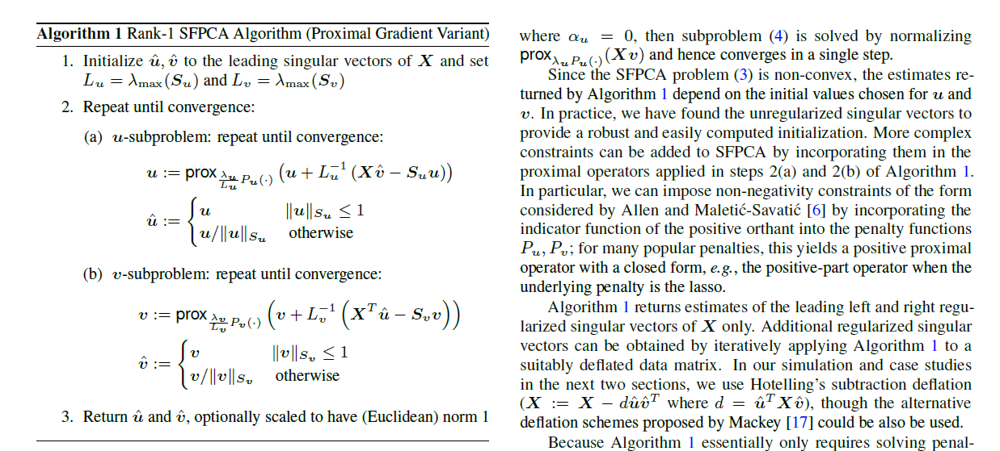
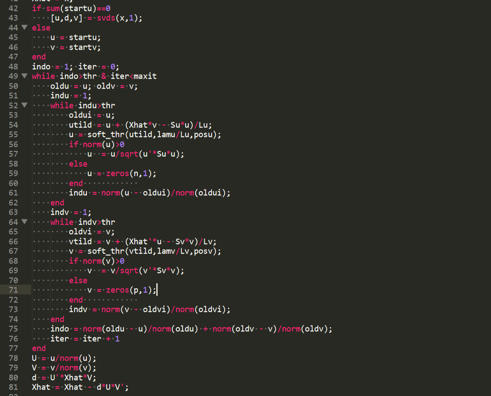
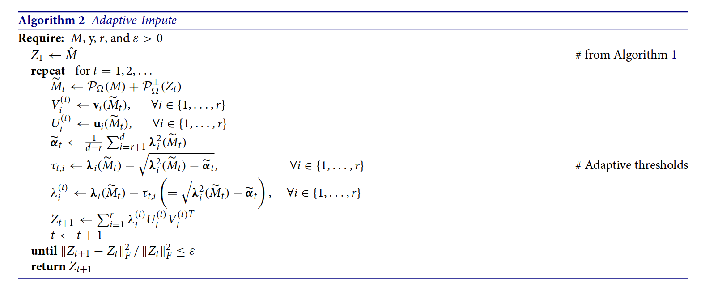

function (x, eps = 1e-07)
{
# prep work
for (iteration in 1:1000) {
# gradient descent steps
if (relative_change_is_small)
break
}
# return
}an exploration of what it would take to meaningfully probe the correctness of computations in modeling software
2019-06-07
Recently I’ve been implementing and attempting to extend some computationally intense methods. These methods are from papers published in the last several years, and haven’t made their way into mainstream software libraries yet. So I’ve been spending a lot of time reading research code, and I’d like to share what I’ve learned.
In this post, I describe how I evaluate the trustworthiness of a modeling package, and in particular what I want from the test suite. If you use statistical software, this post will help you evaluate whether a package is worth using. If you write statistical software, this post will help you confirm the correctness of the code that you write.
Reading and evaluating tests involves a number of fundamental skills that are rarely taught. First, you need to know how to find, read and navigate the source code of the packages themselves1. Second, you need to know just a tiny bit about how software gets tested. For R packages, this means you need to know about testthat, which you can learn about by perusing the Testing chapter of R Packages.
Correct code is part of correct inference. Just as statistically literate data analysts avoid dubious methods, computationally literate data analysts avoid dubious code.
Data analysts use software to decide if drugs worked, to make public policy decisions, and to invest astronomical sums of money. In these high-impact settings, we really want to do correct inference, which means we need to hold code to high standards2.
Ideally, we’d always work with well validated code. However, confirming the correctness of code takes a huge amount of effort, and it isn’t always realistic to hold the code you work with to the highest standards. When a data analysis is low impact, we don’t need to worry about correctness quite as much.
Correctness is also less important in prediction problems than in inference problems. If the code runs and gives you predictions, you can always cross-validate to determine how good they are. If the predictions are off, you still know how well the code performs for its intended purpose, so errors may not matter much3.
There are a lot of different ways you can test modeling code. Broadly, I think of tests as living in four categories:
Most research software tests for correctness, but on occasion I come across parameter recovery tests and convergence tests4. I rarely come across identification tests5.
Correctness tests are by far the most important tests. Correctness tests come in two flavors: unit tests and integration tests. In the modeling context, a unit test checks the correctness of a individual calculations in a fitting procedure. An integration test means shoving data into the fitting procedure and making sure that the resulting estimates are correct.
The general strategy for writing unit tests is to compute the same thing in as many different ways as possible, and verify that all the results agree. For example, I recently needed to find the sum of squared eigenvalues of a matrix. To test my calculations, I calculated this sum using two different eigendecomposition algorithms, and also by finding the squared Frobenius norm of the matrix. The results didn’t agree, and it turned out something was wrong in one of the eigendecompositions.
For integration tests, you run the entire fitting procedure, and then you can:
The gold standard is to compare to a reference implementation. With research code, which is often the first implementation of method, this might not be possible. Additionally, it’s pretty rare to be able to work out the solution by hand.
In practice, most people end up writing a reference implementation and checking that the reference implementation closely matches the pseudocode of their algorithm. Then they declare this implementation correct. How trustworthy this approach is depends on the clarity of the connection between the algorithm pseudocode and the reference implementation.
Consider Algorithm 1 of Allen and Weylandt (2013):

There used a MATLAB reference implementation available online6, which looked like:

This is a good reference implementation because the pseudocode is close enough to the actual code that we can be confident that the translation is correct almost by eyeballing it. I ended up implementing this algorithm in both R and C++ and testing against this reference implementation. Curious parties read the correctness test here.
Note that my test is really an integration test, making sure the entire computation is correct. I don’t do any tests on sub-function or calculations, although it would be good to write a unit test for the soft thresholding function.
In other cases, the connection between the reference implementation and the algorithm pseudocode is less clear. For example, consider Algorithm 2 of Cho, Kim, and Rohe (2018):

You can read the corresponding reference implementation here. While the code does perform the computations outlined in the algorithm pseudocode, it is much harder to make the connection between the two.
The first deviation is in AdaptImpute(), which truncates the reconstructed SVD to within user specified bounds. The paper discusses this computation, but the discussion is somewhat informal, and the truncation doesn’t appear in the pseudocode. The second deviation is in the subfunction SVD.F(), which uses some linear algebra tricks to calculate the sum of squared singular values. Both of these deviations make it more difficult to declare the reference implementation obviously correct7.
Aside: While it’s nice for the algorithm pseudocode to match up nicely with the reference implementation, there are good reasons why this might not be the case. Often the psuedocode will express abstract concepts that are easier to understand when we omit lower level computational details. In cases like this, it’s essential to have good documentation linking the reference implementation and the pseudocode.
Another way to sanity check results is to see if we can recover known parameters with our implementation. Both SFPCA and AdaptImpute are essentially fancy versions of SVD that estimate low rank matrix components. A reasonable thing to do then is to generate a low rank matrix and see if SFPCA and AdaptImpute produces estimates close to the known low rank structure.
At first, we should do this with no noise. Then we should add random noise to the observed matrix. We then want to see the parameter estimates degrade more and more with increasing noise.
If you are a package user, you should look for parameter recovery tests that use data similar to the data you have. A method may work well in some data regimes and not in other data regimes. If there are no tests on data that looks similar to your own, you can often write some without too much hassle.
The Stan community is particularly good about emphasizing parameter recovery tests as a part of the data analysis workflow. You may enjoy Jim Savage’s post on simulating fake data, as well as the Stan Best Practices wiki.
In the package evaluation context, you just want to check that the package you’re interested in does this at least a couple times in its test suite.
Convergence tests check that iterative processes have actually reached solutions. Ideally you want packages to confirm that they convergence on a variety of sample problems. You also want them to perform runtime convergence tests.
For example, I recently came across a modeling function that calculated estimates via gradient descent. It looked like the following:
function (x, eps = 1e-07)
{
# prep work
for (iteration in 1:1000) {
# gradient descent steps
if (relative_change_is_small)
break
}
# return
}The descent portion of the algorithm is contained in the for loop. If the algorithm converges early, the loop will break. But, if the algorithm does not converge in 1000 iterations, it will return an incorrect solution silently.
We can contrast this behavior with lme4, which explicitly warns users on convergence failures. The package also tests to make sure sure it issues this warning.
It can often be difficult to test for convergence, but for simple maximum likelihood or convex problems, I’d love to see more these tests. I suspect there are a lot of convergence failures out there that we don’t know about just because we haven’t checked.
Other communities have taken different approaches. For example, the Stan community is careful to emphasize the importance of MCMC convergence checks as part of the modeling workflow, a task that needs to repeated by the data analyst for each model they fit. The machine learning community sometimes deals with convergence via early stopping, which is more a sort of statistical convergence than algorithmic convergence.
While packages should definitely include convergence tests, automated procedures to check for convergence can be misleading. I would love to see convergence checks become a larger part of the data analysis workflow, and think of convergence as a responsibility shared by both users and developers.
Finally we arrive at identification tests8. These tests are the most subtle out of anything we’ve considered because they get at the gap between theory and practice. For the most part, people don’t let you fit models that are actually unidentifiable.
But you often can fit nearly unidentifiable models, where small perturbations to your data lead to dramatic changes in your estimates. I’m going to avoid details about conditioning and numerical stability here; for a concrete example you can read more about near unidentifiability in lme4 in this post by Camelia Simoiu and Jim Savage.
Generally, the more flexible a modeling tool, the more likely it is that you can fit an unindentifiable or near unidentifiable model. I find an example from Simpson (2018) particularly interesting, where a model with a smooth through time together with CAR(1) structure on the residuals leads to fitting issues due to identification challenges.
When you work with really flexible tools like Stan, you can also write down a model where some parameters just aren’t identified. For example, consider alpha and beta in the following:
data {
int<lower=0> N;
vector[N] y;
}
parameters {
real alpha;
real beta;
real<lower=0> sigma;
}
model {
y ~ normal(alpha + beta, sigma);
}Here alpha + beta is identified, but alpha and beta individually aren’t.
My limited impression is that it’s pretty hard to write tests for poorly conditioned problems. I mostly wanted to include this discussion here to encourage package authors to think about how identifiability might come up in their own work.
I’d also like to mention Gelman’s folk theorem here, which says:
Computational issues during model fitting indicate that you’re trying to fit an inappropriate model to your data.
So far I’ve talked about things to test at a fairly high level. Now I’d like to switch gears and talk about about very specific issues that you need to be careful about, especially in R.
The first thing to note is that most modeling code will fail silently. When modeling code fails, it normally doesn’t throw an error, or return an object with some nonsensical type. Rather, bad modeling code looks and works just like good modeling code, except it silently performs the wrong calculation.
Suppose you want to get an unbiased estimate of population variance and you write the following function:
variance <- function(x) {
mean((x - mean(x))^2)
}This looks so, so much like the sample version of 𝔼((X − 𝔼(X))2), but silently divides by n instead of n − 1. If you expected an unbiased estimate of sample variance, this is wrong. Most modeling failures are in this vein.
In my experience, silent failures happen most often when:
Consider the following
fit <- lm(hp ~ mpg, mtcars)
broom::tidy(fit, conf.int = TRUE, conf.levl = 0.9)# A tibble: 2 × 7
term estimate std.error statistic p.value conf.low conf.high
<chr> <dbl> <dbl> <dbl> <dbl> <dbl> <dbl>
1 (Intercept) 324. 27.4 11.8 8.25e-13 268. 380.
2 mpg -8.83 1.31 -6.74 1.79e- 7 -11.5 -6.16Here conf.levl = 0.9 should read conf.level = 0.9, so the code has silently gone ahead and calculate a 95 percent confidence interval instead of a 90 percent confidence interval. This issue appear over and over in modeling code, and you can read more about it in the tidyverse principles book draft.
There’s almost always a couple of versions of a variable called x floating around in different scopes, and once you start metaprogramming, the risk of confusing these goes way up.
This is mostly because packages that wrap lots of other packages (i.e. broom, parsnip, mlr, etc, etc) don’t normally do integration tests to make sure that the wrapped estimates are correct, and so things slip through the cracks every once in a while.
More precisely, most modeling packages don’t validate their input9, and on top of this a surprising number of packages have buckass crazy data format specifications. Be especially careful around factors, and always double check whether a modeling function standardizes your data internally or not.
In practice, I often do not have time to check for each of these issues, except in critical cases. Instead, I evaluate most modeling packages by counting up red flags and green flags that generally signal software quality. Here’s some things I look for.
Green flags
The code:
Red flags
capture.output() to interact with results10.structure() rather than an S3 constructor function.Now that I’ve pontificated for a while, I recommend that you go out and assess some of your favorite packages and see how you feel about their testing. If you need recommendations to get started, have a look at:
The R community already has shared some excellent thoughts on how to choose which packages we should trust. I especially like Thomas Lumley’s blog post, as well as Jeff Leek’s blog post. Hadley Wickham shares some thoughts in this Twitter thread. The common theme amongst all these takes is that you should trust people rather than packages, and trust heavily used software with crucial functionality.
I agree with all of this. Additionally, I’d pretty strongly endorse packages that have reviewed by ROpenSci. I’m less certain how I feel about packages published in the Journal of Open Source Software (JOSS) and the Journal of Statistical Software (JSS). More peer review is always better than less, but my impression is that peer review is does a lot more to ensure that package authors follow good software engineering practices than it does to ensure actual correctness.
For example, if you take a look at one of my JOSS reviews in progress, note that the Reviewer Checklist doesn’t require me to verify the correctness of calculations, just the existence of tests for those calculations. In theory, tests should verify correctness, but for many modeling packages, the code gets written first, and then the tests get filled in with the results from the code, under the assumption that the code is correct.
In general, the issue is that most interesting model computations are rather complicated, and I’m unwilling to trust that time constrained reviewers are going to take the time to understand all the details of the implementation. I’m also not certain that this is the best way for reviewers to spend their time. Merely as an anecdote, I recently reimplemented the algorithms in Cho, Kim, and Rohe (2018), a process which took me six weeks11, even though I was able to repeatedly sit down with the author of the original implementation to ask questions.
If you remember one thing from this blog post, it should be that you need to read the tests. Many packages write tests that do not actually ensure correctness. These tests may make sure the code runs without throwing an error, or that the type of returned objects is correct, but may not verify that computations are performed correctly.
Remember: sane people do not use untested software. You have two jobs. The first job is to write correct code. The second job is to convince users that you have written correct code.
Users will read the tests in your package when they decide if they want to use your software. The easier it is for a user to understand your tests, the more likely it is they will use your software. Appropriately testing code takes a lot of time, and I hope you build this time into your schedule in the future.
You can read lots more about the mechanics of testing in R Packages, which focuses extensively on how to test code12.
There are a lot of important correctness issues in data science beyond implementation correctness in software packages. You might want to sanity check (1) the results of a data analysis, or (2) a machine learning system running in production. These are both very different beasts, each requiring their own distinct set of tools.
For thoughts on sanity checking the correctness of a data analysis, you may enjoy Checking Driven Development by Greg Wilson or Hicks and Peng (2019). If you run machine learning in production, some good resources are Breck et al. (2017) and Kirk (2015).
Hold tight, I have an upcoming post on this.↩︎
It’s also worth thinking about methodological correctness. As the impact of a data analysis grows, you should think more and more about bringing experts onto the data analysis team.↩︎
I’m pretty sure there’s an Open AI blog post on this, but I can’t find it at the moment. The gist was that bugs in neural networks for reinforcement learning don’t show up as crashes and errors, but as silently incorrect calculations that reduce model performance.↩︎
Here’s a fascinating read that describes the “GAM crisis”, a series of nonsense research results in the air pollution community that resulted from subtle convergence failures.↩︎
Interestingly enough, the foundational “White Book” (Chambers and Hastie 1999) does spend some time discussing condition numbers for linear models, although this material rarely appears in regression courses.↩︎
It has seen been replaced with a more full fledged R package MoMa.↩︎
The astute reader may note that the SFPCA implementation from earlier also deviates from the algorithm pseudocode, scaling by p and n. This sort of thing is a common occurrence that makes reproducing work very difficult without access to the original code.↩︎
Identification is a technical property of a statistical model. Formally, if we have a model Pθ, where Pθ is a probability distribution with parameters θ, Pθ is identifiable if Pθ1 = Pθ2 implies θ1 = θ2. Informally, the idea is that we only want to work with models where a there’s a single most likely parameter. Unidentifiable models might lead to statements like: “our best guess for the mean is either 8, or 14, or 107”, which isn’t very useful.↩︎
ENDLESS SCREAMING.↩︎
It’s hard to test code that prints but doesn’t return actual values.↩︎
To be fair, this was also during the last month of the semester. Ah, the joys of the academic work schedule.↩︎
R Packages teaches you how to use the testthat package for testing. I should not that there are other ways to test R code. I strongly recommend against these alternatives. More people understand testthat than any other testing system. Using an alternative test system makes it more difficult for users to understand and verify the reliability of your software.↩︎